Steward
分享是一種喜悅、更是一種幸福
手機 - Fujitsu LOOX F-07C - 更換主機板
首先鬆開背部的6顆螺絲
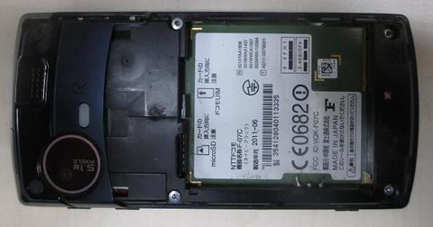
提起背蓋
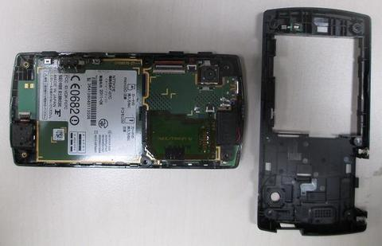
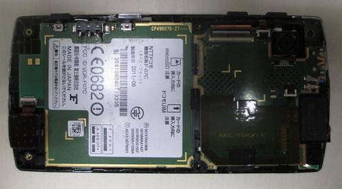
MicroSD和SIM卡主板
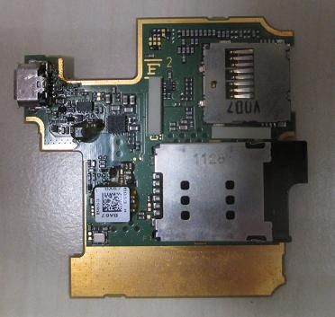
竟有IrDA介面
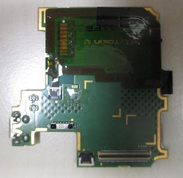
拆下主板
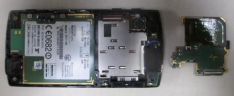
固定架和Speaker
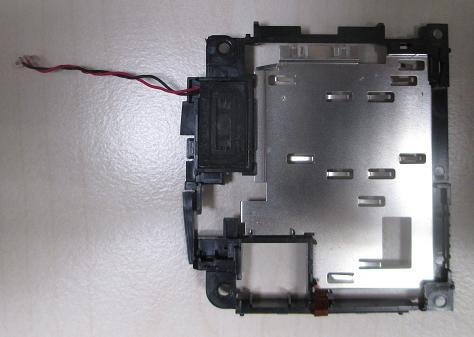
右下方的Connector己經被司徒徹底破壊
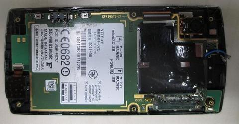
拿起主機板時，要注意底面的排線
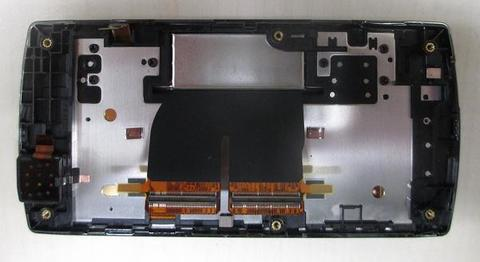
司徒從淘寶買到的主機板
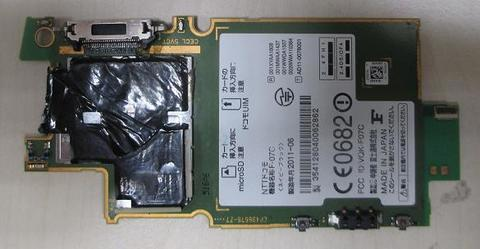
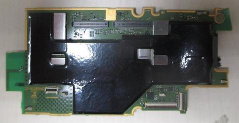
新板 V.S. 舊板
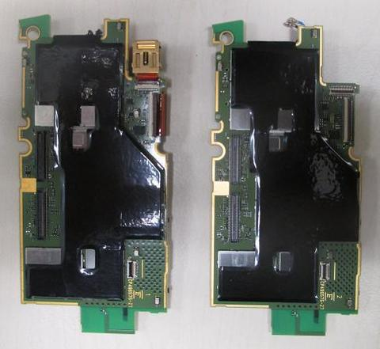
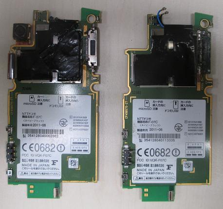
特寫一下被司徒弄壊的Connector
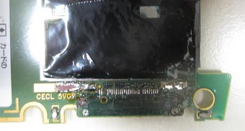
另一個被司徒弄壊的地方就是MicroSD和SIM卡主板上的MicroUSB Connector
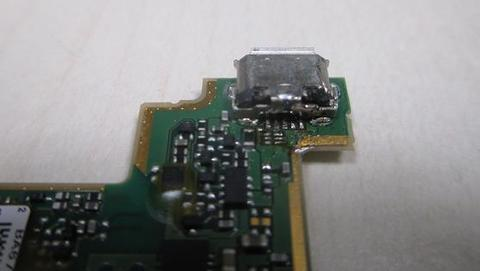
組裝好後，司徒發現新主機板上的Connector是經過改裝的，這樣更好，因為原廠的Connector座，焊接的太裡面，導致一般的iPhone 4 Connector無法順利插入，司徒只能購買日本Yahoo拍賣的F-07C專用Connector，缺點就是單價相對高價，不過，司徒的這個Connector座，看來可以直接使用一般的iPhone 4 Connector
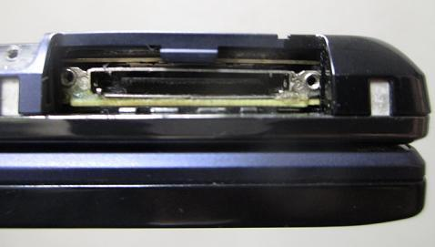
完成
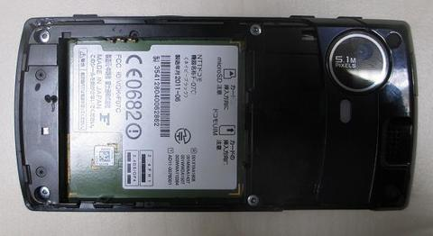
果然可以使用一般iPhone 4 Connector
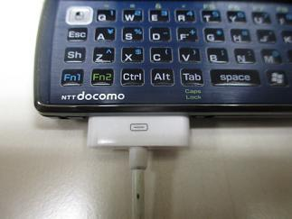
大功告成
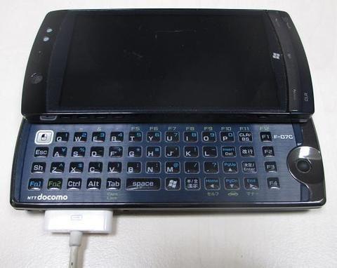